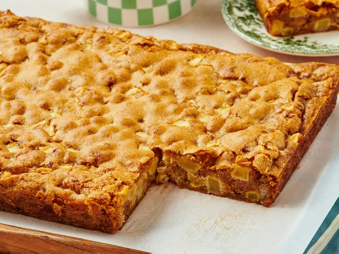

German Apple Cake

Description
This German apple cake recipe makes a moist, dense cake that keeps well. It has been a family favorite for over 20 years. It's delicious served with a dusting of confectioners' sugar.
Ingredients
- 1 cup vegetable oil
- 2 large eggs
- 2 cups white sugar
- 1 teaspoon vanilla extract
- 2 cups all-purpose flour
- 2 teaspoons ground cinnamon
- 1 teaspoon baking soda
- ½ teaspoon salt
- 4 cups apples - peeled, cored, and diced
Steps
- Preheat the oven to 350 degrees F (175 degrees C). Grease and flour a 9x13-inch cake pan.
- Beat oil and eggs in a large bowl with an electric mixer until creamy. Add sugar and vanilla extract; beat until well combined.
- Sift flour, cinnamon, baking soda, and salt together in a medium bowl.
- Gradually stir flour mixture into oil-egg mixture until just combined; batter will be very thick. Fold in apples using a wooden spoon or spatula.
- Spread batter into the prepared pan.